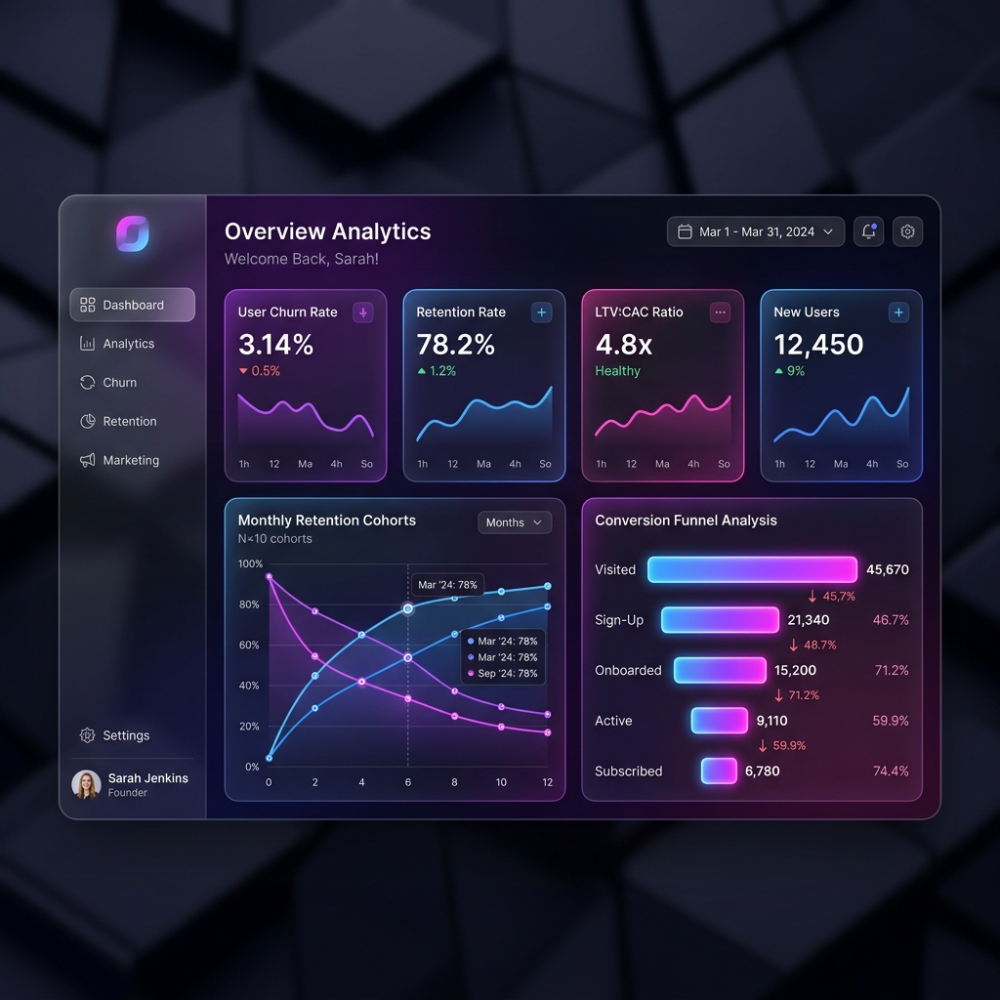

A live, interactive business calculator for founders and operators. Model your unit-economics, forecast retention, and simulate pricing elasticity to see how macro changes impact your bottom line.

A comprehensive diagnostic suite for understanding customer attrition before it impacts your bottom line.
The ultimate LTV:CAC dashboard linking acquisition costs directly to long-term profitability.
Identify and plug the exact leaks in your user journey from first visit to final purchase.
Optimize your platform take-rate without destroying seller liquidity or buyer demand.